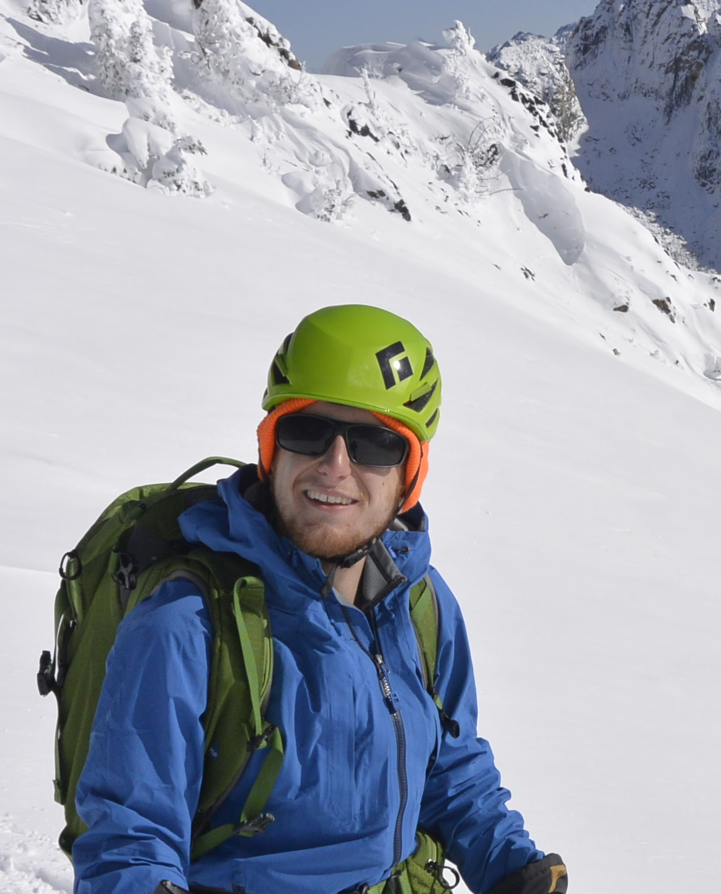

|
Piotr Teterwak
I am a first year PhD student at Boston University and am advised by Professor Kate Saenko. Prior to my PhD, I was an AI Resident on the Perception Team at Google Research, where I spent two amazing years, working with Dr. Dilip Krishnan, Dr. Ce Liu, Professor Mike Mozer, and many others. Prior to that, I spent time on the ML team at Apple, and worked at a startup called Turi. I got my Bachelor's degree in Computer Science from Dartmouth College.
Email /
CV /
Google Scholar /
Twitter
|

|
|
Research
I'm broadly interested in machine learning and computer vision, and am particularly interested in learning compact but semantically rich representations of our world.
|
|
|
Supervised Contrastive Learning
Prannay Khosla,
Piotr Teterwak,
Chen Wang,
Aaron Sarna,
Yonglong Tian,
Phillip Isola,
Aaron Maschinot,
Ce Liu,
Dilip Krishnan
NeurIPS, 2020
arXiv
A new loss function to train supervised deep networks, based on contrastive learning. Our new loss performs significantly better than cross-entropy across a range of architectures and data augmentations.
|
|
|
Boundless:Generative Adverserial Networks for Image Extension
Piotr Teterwak,
Aaron Sarna,
Dilip Krishnan,
Aaron Maschinot,
David Belanger,
Ce Liu,
William T. Freeman
ICCV 2019
We adapt GAN's for the image extrapolation problem, and use a novel feature conditioning to improve results.
|
Template from Jon Barron's really cool website,
|
|
{kind=link}